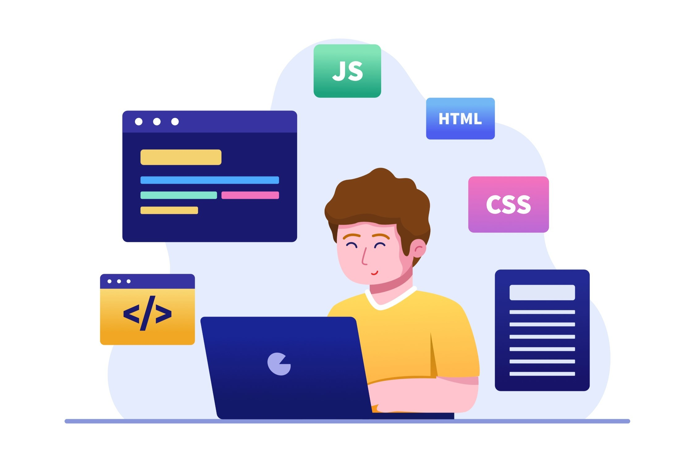

Uma visão panorâmica sobre
o desenvolvimento web
No cenário digital contemporâneo, o desenvolvimento web surge como um dos pilares fundamentais que sustentam a nossa interação com a internet. O desenvolvimento web transcende a simples construção de páginas estáticas, envolvendo uma intricada teia de linguagens de programação, design criativo e otimização técnica.
Nessa perspectiva, explorar o tema do desenvolvimento web é mergulhar em um universo dinâmico e em constante evolução, onde a inovação e a funcionalidade convergem para moldar a experiência digital contemporânea. A busca por eficiência é crucial para se manter atualizado e atender às demandas dos usuários finais.
Além da responsividade para diversos dispositivos, a integração de tecnologias emergentes, como inteligência artificial e realidade aumentada, está transformando o desenvolvimento web. Manter-se atualizado é essencial para atender às demandas de um público diversificado.
Mas afinal, o que é desenvolvimento web?
Desenvolvimento web é o processo de criação, construção e manutenção de sites, aplicativos e outras plataformas online acessíveis através da internet. Envolve uma combinação de habilidades técnicas, criatividade e conhecimento das linguagens de programação, design visual, arquitetura de informações e interatividade. O desenvolvimento web abrange desde a elaboração da estrutura básica de uma página até a implementação de funcionalidades avançadas, garantindo uma experiência fluida e eficaz para os usuários. Isso inclui a codificação HTML, CSS e JavaScript, a integração de bancos de dados, a otimização para diferentes dispositivos e navegadores, bem como a consideração de aspectos de segurança e desempenho. Com a constante evolução das tecnologias e tendências, o desenvolvimento web desempenha um papel crucial na criação de ambientes digitais inovadores e intuitivos.

O que faz um desenvolvedor web?
Um desenvolvedor web é um profissional encarregado de criar e manter sites, aplicativos e plataformas online. Isso envolve traduzir designs em código, construir a interface visual e as funcionalidades do usuário (front-end), além de desenvolver a lógica de negócios, gerenciar bancos de dados e garantir a segurança (back-end). Desenvolvedores full-stack combinam ambas as áreas. Além das habilidades técnicas, os desenvolvedores web precisam acompanhar as tendências tecnológicas para criar experiências digitais inovadoras e eficazes.
Front-End
O front-end é a área do desenvolvimento web que se concentra na criação da interface visual e interativa de sites e aplicativos. Utiliza-se HTML para estruturação, CSS para estilo e JavaScript para funcionalidades. É crucial para uma experiência do usuário atraente e eficiente.
Back-End
O back-end é a parte não visível de um site ou aplicativo, que inclui servidores, banco de dados e lógica de aplicativo. Os desenvolvedores back-end cuidam da funcionalidade e segurança do sistema, garantindo a eficiência das operações que acontecem nos bastidores e a interatividade para os usuários no front-end.
Full-Stack
Desenvolvedores full stack dominam tanto o front-end (interface visível) quanto o back-end (funcionalidades não visíveis) de sites ou aplicativos. Eles são versáteis e podem contribuir em todas as etapas do desenvolvimento.
Conheça as principais tecnologias
do desenvolvimento web!

- Linguagem de marcação para estruturar o conteúdo de páginas web
- Define elementos como títulos, parágrafos, imagens e links.
- Organiza elementos em uma hierarquia que os navegadores interpretam.
- Linguagem de programação para adicionar interatividade a páginas web.
- Cria animações, validações de formulários e outras funcionalidades.
- Permite que elementos reajam às ações dos usuários, tornando a experiência mais dinâmica.
- Linguagem para estilizar a apresentação visual de páginas HTML.
- Controla layout, cores, tipografia e aspectos visuais.
- Permite criar estilos consistentes e atraentes para a página.
Resumindo HTML, CSS e Javascript
As principais tecnologias de desenvolvimento web são HTML, CSS e JavaScript. O HTML é responsável por estruturar o conteúdo da página, o CSS é utilizado para estilizar a apresentação visual, e o JavaScript adiciona interatividade e dinamismo, permitindo que os elementos da página respondam às ações dos usuários e interajam com os dados. Juntas, essas tecnologias formam a base essencial para a criação de sites e aplicativos web modernos e funcionais.


Então, como iniciar na carreira
de desenvolvedor web?
Para iniciar uma carreira como desenvolvedor web, comece aprendendo os fundamentos do HTML, CSS e JavaScript, por meio de cursos online e plataformas de aprendizado. Escolha entre áreas como front-end, back-end ou desenvolvimento full-stack, e pratique suas habilidades construindo projetos práticos e contribuindo para projetos de código aberto. Crie um portfólio online para mostrar suas realizações, participe de grupos de desenvolvedores para networking e esteja sempre atualizado com as últimas tendências tecnológicas. Considere também a educação formal em ciência da computação, se desejar uma base sólida. Mantenha-se comprometido com a prática constante e o aprendizado contínuo para progredir em sua carreira de desenvolvedor web.